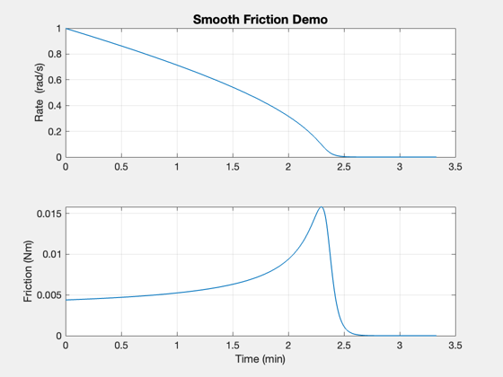
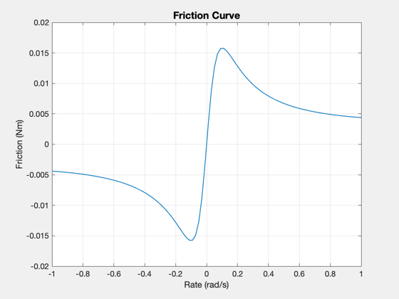

Demonstrate the use of the smooth friction model
------------------------------------------------------------------------- See also Plot2D, TimeLabl, RK4, FrictionSmooth -------------------------------------------------------------------------
Contents
------------------------------------------------------------------------- Copyright (c) 2003 Princeton Satellite Systems, Inc. All rights reserved. -------------------------------------------------------------------------
For an Honeywell HR2020 RWA from datasheet S61-7030-7.0-0
%---------------------------------------------------------- pMax = 35; % W wMax = 6400*2*pi/60; % RPM to rad/sec fViscous = pMax/wMax; % From holding power bViscous = fViscous/wMax; nSim = 1000; xPlot = zeros(2,nSim); clear d; d.fCoulomb = 0.1*fViscous; % A guess d.kCoulomb = 1; d.fStatic = 3*d.fCoulomb; d.kStatic = 10; d.bViscous = bViscous; fprintf('Viscous coefficient = %12.4f Nm/rad/s\n',d.bViscous) fprintf('Coulomb friction = %12.4f Nm\n',d.fCoulomb) fprintf('Static friction = %12.4f Nm\n',d.fStatic) x = 1; dT = 0.2;
Viscous coefficient = 0.0001 Nm/rad/s Coulomb friction = 0.0052 Nm Static friction = 0.0157 Nm
Simulation of the effect of friction
%------------------------------------- for k = 1:nSim f = FrictionSmooth(x,d); x = RK4('FSRHS',x,dT,0,d); xPlot(:,k) = [x;f]; end [t,xL] = TimeLabl((0:(nSim-1))*dT); yL = ['Rate (rad/s)';... 'Friction (Nm)']; Plot2D(t,xPlot,xL,yL, 'Smooth Friction Demo')
Friction as a function of rate
%------------------------------- f2 = FrictionSmooth(linspace(-1,1),d); Plot2D(linspace(-1,1),f2,'Rate (rad/s)','Friction (Nm)','Friction Curve' ) %-------------------------------------- % $Date$ % $Id: 8d8da68a7eef34e08a7e092e2a05c92ec389f3ca $